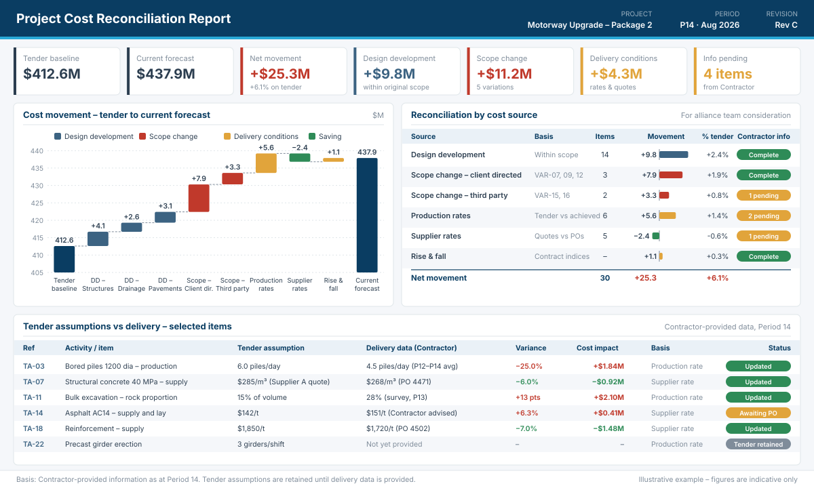

On alliance and other collaborative contracts, the owner reimburses the contractor's actual costs. Cost verification checks that those costs are genuine project costs. What it is not designed to show is why the cost has moved away from the tender – and that is often the question the alliance team most needs answered.
How cost is measured on an alliance
Under a typical alliance, the owner and the non-owner participants agree a target outturn cost (TOC) before delivery. During delivery the owner reimburses actual costs, and at completion the final actual cost is compared with the target. Any underrun or overrun is shared between the participants under the pain/gain arrangement.
This model depends on two things being reliable: the actual cost figure, and an understanding of why actual cost differs from the target. Most alliances have a strong process for the first. The second is often left to general commentary in monthly reports.
What project cost verification does
Cost verification – usually carried out by an independent auditor or verifier with a financial or audit background – confirms that the costs claimed are real, correctly recorded and attributable to the project. In practice this means checking:
- invoices, payroll and plant records against the cost ledger
- that costs are coded to the project and to the correct cost account
- that rates and overheads are applied as the alliance agreement allows
- that excluded or non-reimbursable costs have been removed
This is essential work. It gives the owner confidence that the money spent was spent on the project.
What it does not show
A verified cost tells you that money was spent, not why more or less was spent than the tender assumed. Two common gaps follow from this.
Design development versus scope change
Designs grow between tender and construction. Some of that growth is normal design development within the original scope – a pile cap gets larger once the loads are confirmed, or a pavement thickens after the geotechnical results come in. Some of it is genuine scope change – an additional gantry requested by the client, or a utility relocation required by a third party. Both appear as verified actual cost. Without a link back to the tender scope, they are difficult to tell apart.
Tender assumptions versus delivery conditions
Every tender estimate rests on assumptions: production rates, supplier quotes, ground conditions, crew sizes. During delivery, some of these prove optimistic and some conservative. If the tender assumed six bored piles a day and the site is achieving four and a half, the extra cost is real and verifiable – but on its own, the cost ledger does not show that it came from a production rate assumption rather than from a design change.
When these sources are not separated, the alliance tends to see a single figure for cost growth. The owner bears that cost, and the pain/gain discussion has little to work with beyond the total.
What project cost reconciliation adds
Cost reconciliation keeps the tender estimate as a live baseline throughout delivery and separates cost movement into its sources:
- Design development – growth within the original scope, by design package
- Scope change – variations identified by the contractor, split by client-directed and third-party
- Delivery conditions – differences between tender assumptions and what is happening on site, such as production rates, supplier rates and rise and fall

A worked example
Suppose the tender assumed bored piles would be installed at 6.0 per day. Over three periods the contractor reports an average of 4.5 per day. For 368 piles at a crew cost of $90,000 per day:
On the same project, concrete was tendered at $285/m³ from a supplier quote, and the purchase order has since been placed at $268/m³. Across 54,000 m³:
Both movements are verifiable actual costs. Reconciliation records them separately, against the assumption they relate to, so the alliance can see which assumptions have moved and by how much. Where the contractor has not yet provided delivery data – a girder erection rate, for example – the tender assumption is retained and no movement is reported until information is available.
How the two work together
Project cost reconciliation and project cost verification answer different questions, and an alliance benefits from both.
| Project cost reconciliation | Project cost verification | |
|---|---|---|
| Question answered | Why has cost moved from the tender? | Are these genuine project costs? |
| Reference point | Tender estimate, scope and assumptions | Invoices, ledgers, agreement terms |
| Typical background | Estimating and cost planning | Audit and finance |
| Output | Cost movement by source | Confirmed actual cost |
| Used for | Alliance team review and pain/gain discussion | Payment and financial assurance |
What reconciliation relies on
Reconciliation is only as good as the information behind it. It relies on the contractor to identify design changes, scope changes and variations, and to provide delivery data such as achieved production rates and purchase order prices.
TAC's role is to advise on and separate the cost of each movement using the information the contractor provides. We do not audit or independently verify that information, and we do not decide what is or is not a valid variation – those remain matters for the alliance team.
When to start
Reconciliation is most useful when it starts at the beginning of delivery, with the tender estimate set up as a structured, linked baseline – quantities, rates, resources and key assumptions connected rather than held as fixed totals. Starting part-way through is possible, but it means reconstructing the baseline and earlier movements from records, which takes longer and is less precise.
In summary
- Project cost reconciliation keeps the tender as a baseline and reports cost movement by source – design development, scope change and delivery conditions.
- Project cost verification confirms that actual costs are valid project costs.
- Verification on its own does not separate design development from scope change, or tender assumptions from delivery conditions.
- Used together, they give the alliance a clearer basis for reviewing cost growth and for pain/gain discussions.